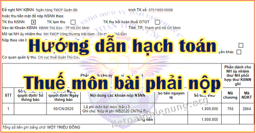

Cách hạch toán thuế môn bài theo Thông tư 133 và 200; Cách định khoản thuế môn bài phải nộp, cách hạch toàn tiền phạt chậm nộp lệ phí môn bài. Kế toán Diệu Tâm xin trích các quy định về việc hạch toán thuế môn bài.

1. Hạch toán chi phí thuế Môn bài khi nộp tờ khai:
- Dựa vào Tờ khai thuế môn bài đã nộp các bạn hạch toán như sau:
Nếu Doanh nghiệp bạn hạch toán theo Thông tư 133:
Nợ TK 6422 - Chi phí quản lý Doanh nghiệp
Có TK 3338 (Chi tiết 33382) - Các loại thuế khác
Nếu Doanh nghiệp bạn hạch toán theo Thông tư 200:
Nợ TK 6425 - Thuế, phí và lệ phí
Có TK 3338 (Chi tiết 33382) - Các loại thuế khác
Lưu ý: Bạn phải xác định được Doanh nghiệp mình áp dụng chế độ kế toán theo Thông tư 133 hoặc 200 (Phụ thuộc vào quy mô) => Tiêu chí xác định quy mô của Doanh nghiệp bạn xem tại đây nhé: Tiêu chí xác định doanh nghiệp nhỏ và vừa.
----------------------------------------------------------------------------------------
2. Hạch toán thuế môn bài khi nộp tiền:
- Dựa vào Giấy nộp tiền thuế môn bài đã nộp thành công, các bạn hạch toán như sau:
Doanh nghiệp áp dụng chế độ kế toán theo Thông tư 133 hoặc 200, cũng hạch toán như sau nhé:
Nợ TK 3338 (Chi tiết 33382)
Có TK 111/ TK 112
Xem thêm: Hướng dẫn cách kê khai thuế môn bài.
----------------------------------------------------------------------
3, Hạch toàn tiền phạt chậm nộp thuế môn bài:
Nếu DN bạn bị chậm nộp thuế môn bài, các bạn hạch toán như sau:
- Khi nhận được Quyết định xử phạt của Cơ quan thuế:
Nợ TK 811: Chi phí khác
Có TK 3339: Phí lệ phí và các khoản phải nộp
- Khi nộp tiền phạt chậm nộp vào ngân sách:
Nợ TK 3339: Phí lệ phí và các khoản phải nộp
Có TK 111/112.
- Cuối kỳ kết chuyển:
Nợ TK 911
Có TK 811
Chú ý: Tiền phạt chậm nộp Tiền thuế môn bài và Tờ khai thuế môn bài -> Không được trừ khi tính thuế TNDN nhé.
Theo khoản 2 điều 4 Thông tư 96/2015/TT-BTC quy định cụ thể như sau:
" 2. Các khoản chi không được trừ khi xác định thu nhập chịu thuế bao gồm:
2.36. Các khoản tiền phạt về vi phạm hành chính bao gồm: vi phạm luật giao thông, vi phạm chế độ đăng ký kinh doanh, vi phạm chế độ kế toán thống kê, vi phạm pháp luật về thuế bao gồm cả tiền chậm nộp thuế theo quy định của Luật Quản lý thuế và các khoản phạt về vi phạm hành chính khác theo quy định của pháp luật."
Xem thêm: Mức phạt chậm nộp thuế môn bài.
Kế toán Diệu Tâm xin chúc các bạn thành công!
--------------------------------------------------------------------